Ablauf der Nacht.
Eine Uhr für alle.
Wer wann spielt, Countdown bis Set-Ende und Sperrstunde – auf den Handys der Crew, als große Uhr in der Booth und auf einem Bildschirm am Eingang. Ein Rechner hält den Timetable, niemand muss etwas installieren.
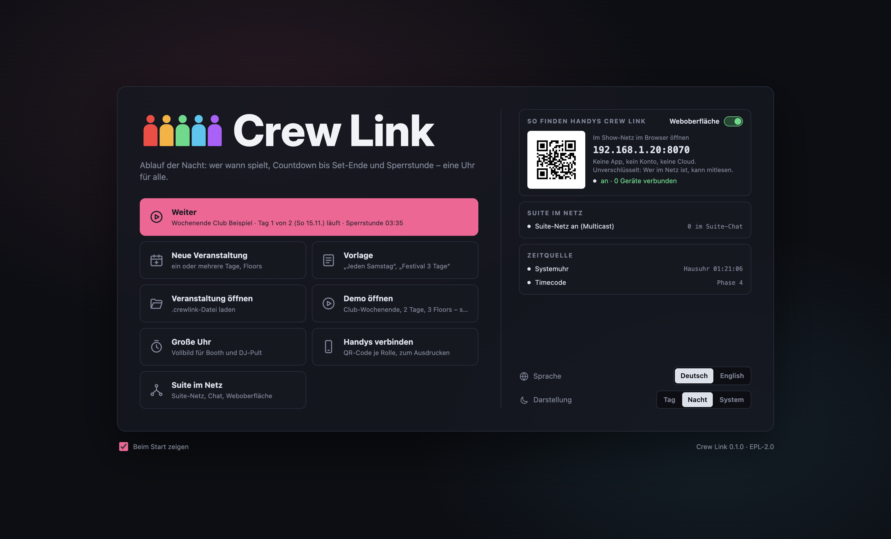
Echter Screenshot mit der Demo-Veranstaltung. Die Adresse 192.168.1.20 ist ein Beispiel.
Das ist die erste öffentliche Alpha (0.1.0, Phase 1 des Plans). Geprüft ist Crew Link nur im Demo-Modus auf dem Prüfrechner (ein Mac) und mit mehr als 100 automatischen Tests. Der Test mit echten Handys und Tablets steht noch aus; Windows und eine echte Clubnacht sind ebenfalls nicht getestet. Die App ist nicht signiert und nicht notarisiert. Probier sie vor einer wichtigen Nacht aus, halte einen Ausdruck bereit und erzähl uns auf Discord, was dir auffällt.
Funktionen
Alle wissen, wie lange es noch geht.
Die Leitung legt die Nacht auf einem Rechner im Show-Netz an – dem Leitstand. Alle anderen sehen den Teil, den sie brauchen. Crew Link zeigt nur Zeiten: Es stoppt keine Musik und schaltet kein Licht.
Timetable mit Tagen und Floors
Eine Clubnacht oder ein Festival mit mehreren Tagen, jeder mit Betriebszeit und eigener Sperrstunde. Slots in der Zeitleiste oder als Liste, Tag kopieren, Vorlagen, Ausdruck A4.
Countdowns, die nicht springen
Set-Ende, nächster Slot, Floor-Ende und Sperrstunde. Grün, ab 10 min gelb, ab 2 min rot, danach rot mit „+“, wenn ein DJ überzieht.
Handys ohne App
Handys verbinden zeigt je Rolle einen QR-Code: Leitung, Booth, DJ, Technik, Security, Bar. Jede Rolle sieht, was sie braucht.
Eine Hausuhr
Der Leitstand gibt die Zeit vor. Browser messen ihre Abweichung – auch ein Handy mit falscher Uhr zählt richtig, auf dem Prüfrechner auf etwa ±0,01 s.
Große Uhr für Booth und DJ-Pult
Vollbild, ein Floor: Countdown, wer danach kommt, Balken bis zur Sperrstunde. Als Fenster am Leitstand oder im Browser.
Öffentliche Seite für den Eingang
„Jetzt · danach“ je Floor, nur mit öffentlichen Namen. Ein Secret Guest bleibt „Special Guest“.
Zählt weiter ohne Netz
Fällt das WLAN aus, zählen Handys und Uhren mit dem letzten Plan weiter und zeigen einen gelben Streifen.
Überzogen? Du entscheidest
Nächsten kürzen und Alles verschieben zeigen erst eine Vorschau. Crew Link ändert den Plan nie von selbst und warnt vor der Sperrstunde.
Suite-Chat mit EMERGENCY
Am Leitstand ist Crew Link Teilnehmer im Suite-Chat mit LJ Link, LJL Link und VJ-Link. EMERGENCY ist kein Sicherheitssystem.
Bilder
Echte Screenshots, Demo-Daten.
Aufgenommen auf dem Prüf-Mac mit der Demo-Veranstaltung „Wochenende Club Beispiel“.
Leitstand
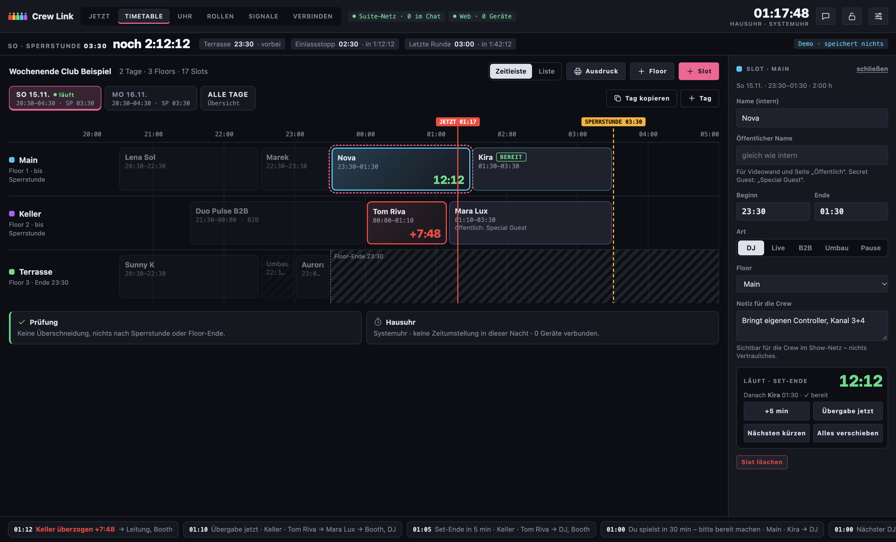
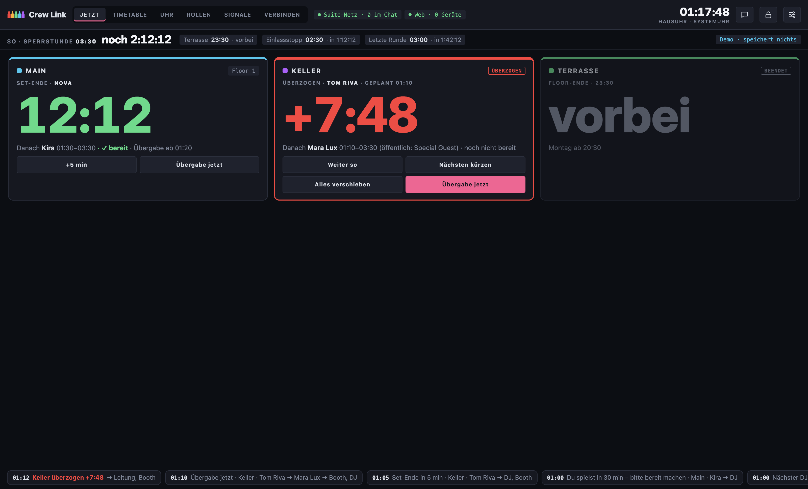
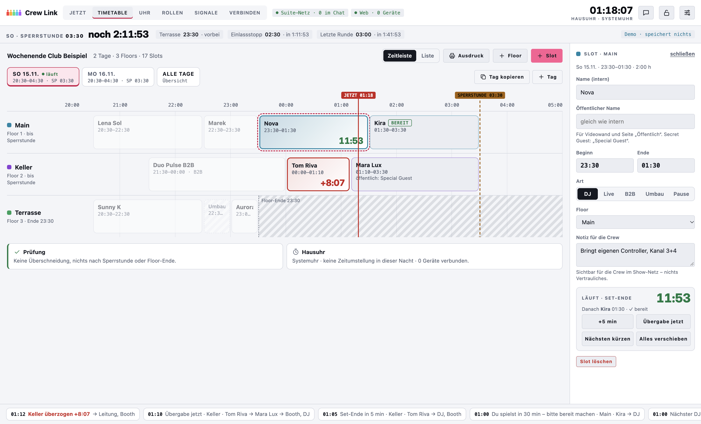
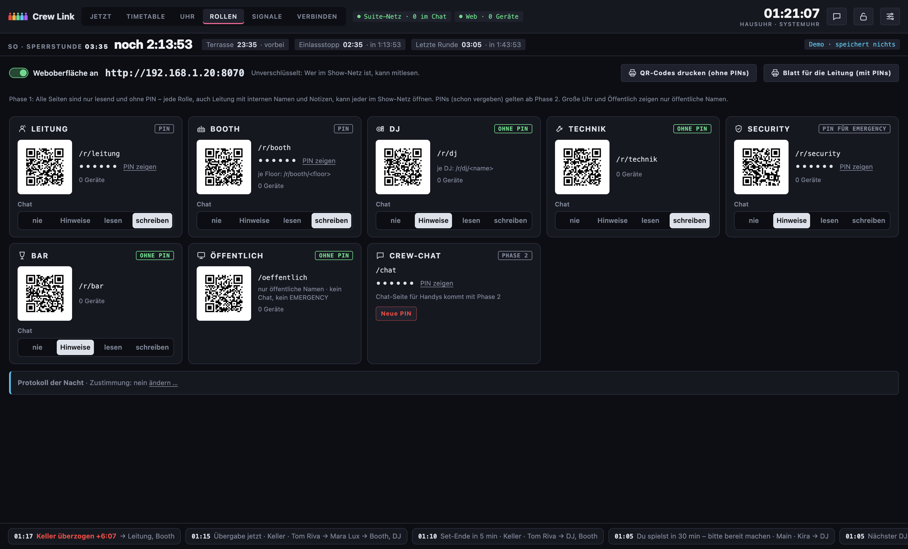
Große Uhr und öffentliche Seite
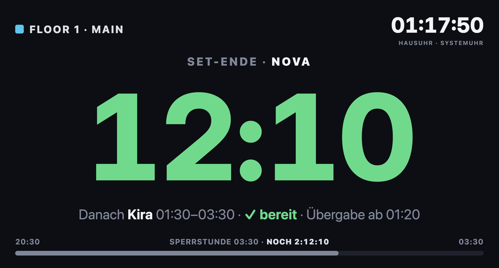
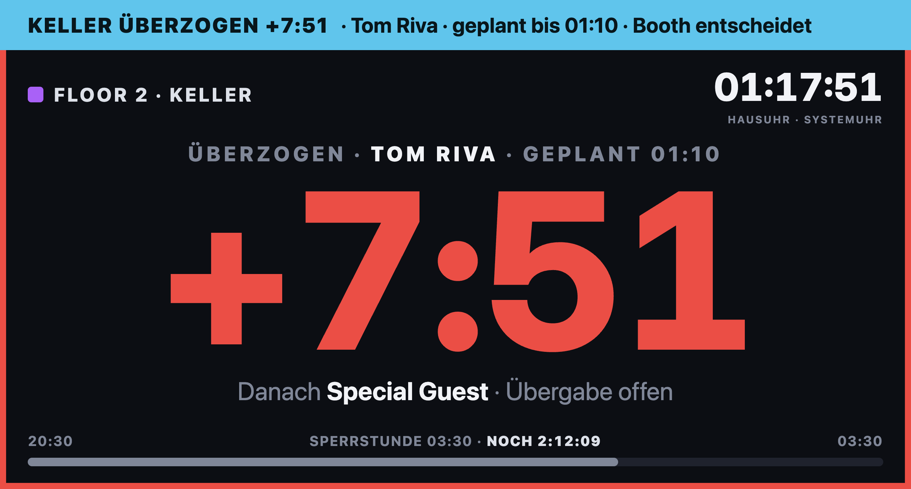
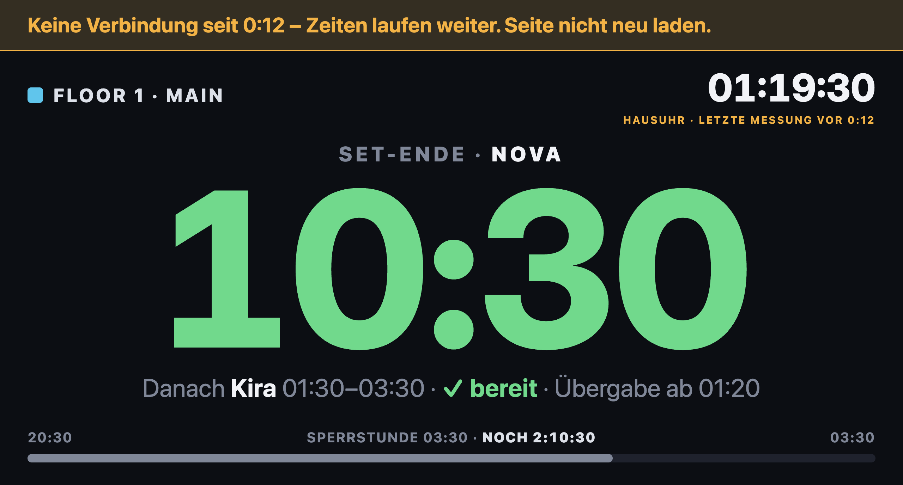
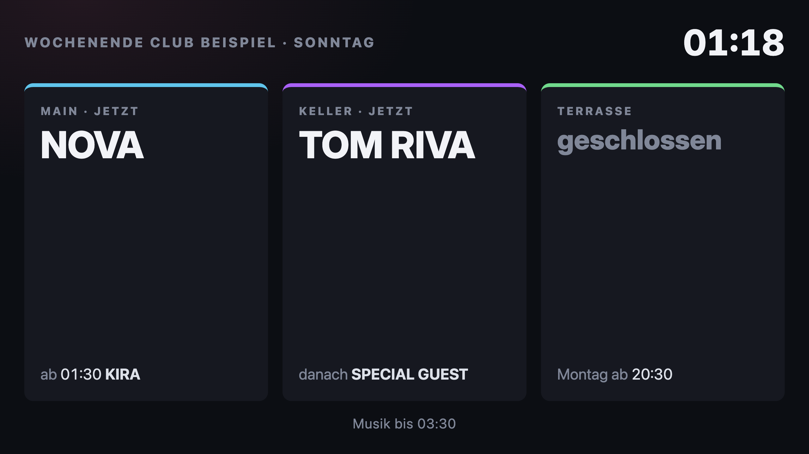
Handys
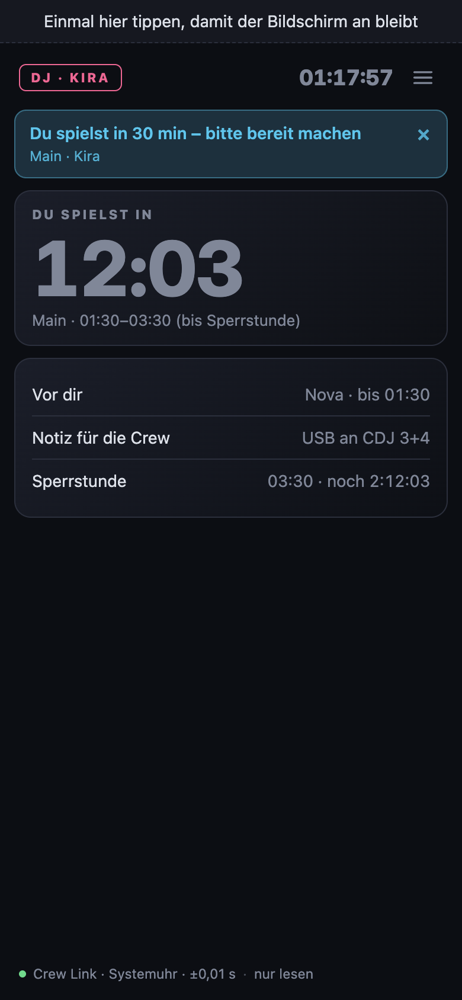
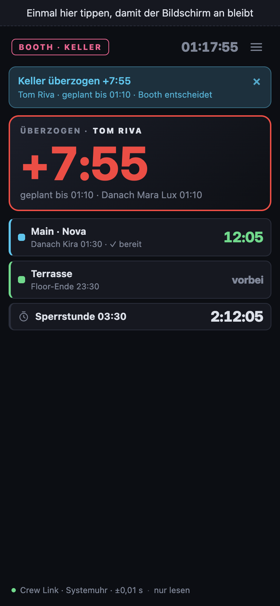
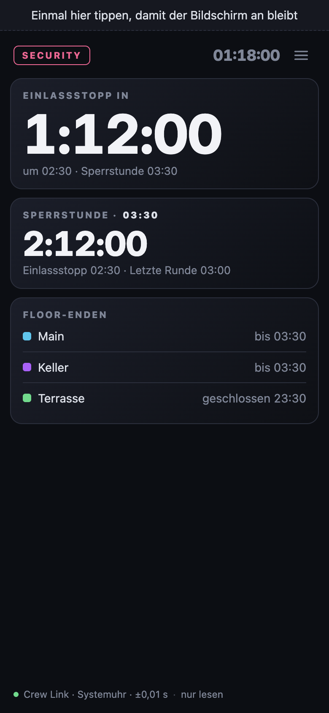
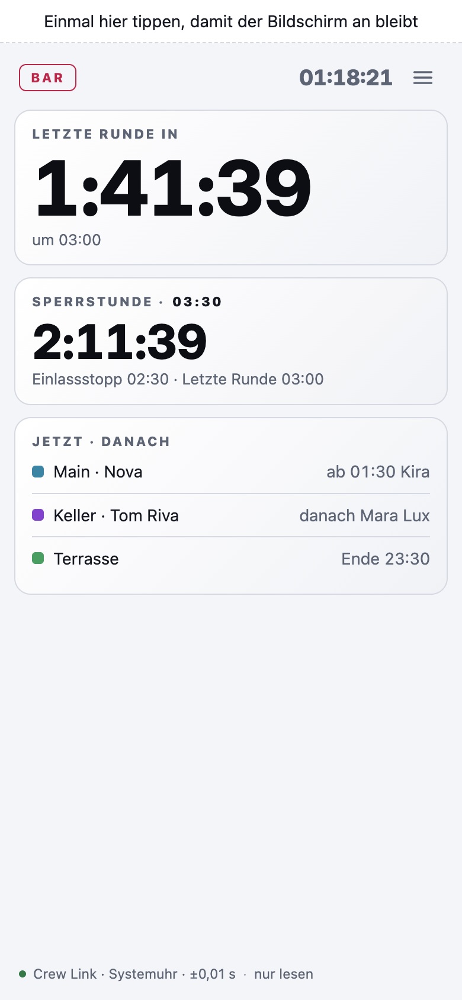
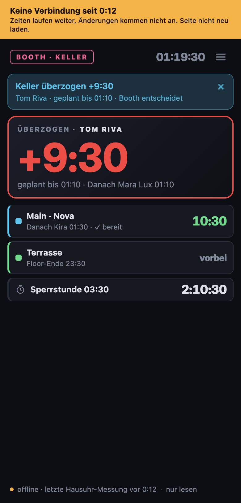
Handy-Ansichten in einem Browserfenster mit 390 × 844 auf dem Mac, nicht auf einem echten Handy. Der Streifen oben („Einmal hier tippen, damit der Bildschirm an bleibt“) sieht auf dem Gerät genauso aus.
So funktioniert's
Ein Leitstand, viele Bildschirme.
Crew Link läuft auf einem Rechner im Show-Netz. Handys, Tablets und Bildschirme öffnen seine Seiten im Browser. Alles bleibt im lokalen Netz: kein Konto, keine Cloud, keine Telemetrie, keine Verbindung ins Internet.
(ab Werk aus)
Suite: Multicast
tick); damit er dort erscheint, brauchen die Programme ein Update.Countdown dort: geplantWas den Rechner verlässt
Nur im lokalen Netz.
Crew Link sendet nur im lokalen Netz. Es hat kein Konto, keine Cloud, keine Telemetrie und keine Update-Prüfung.
| Was | Wohin | Wann |
|---|---|---|
| Rollen-Seiten: Timetable mit internen Namen und Notizen | Browser im Show-Netz, Port 8070, unverschlüsselt | nur bei eingeschalteter Weboberfläche (ab Werk aus) |
| Große Uhr und öffentliche Seite: nur öffentliche Namen, keine Notizen | Browser, Port 8070 | nur bei eingeschalteter Weboberfläche |
here alle 5 s: Programm, Version, Rolle, Web-Adresse, Kennung der Veranstaltung, Tag | Suite-Netz (Multicast, TTL 1) | solange das Suite-Netz an ist (ab Werk an, abschaltbar unter VERBINDEN) |
tick jede Sekunde: Hausuhr, laufender Tag, Floors nur mit öffentlichen Namen | Suite-Netz | solange das Suite-Netz an ist |
| Suite-Chat: alle 5 s ein Anwesenheitszeichen (Programm, zufällige Kennung, dein Chat-Name und deine Position); jede Nachricht mit Name, Position, Text und Uhrzeit. Neue im Raum bekommen von jedem Programm, auch von Crew Link, die letzten bis zu 20 Nachrichten noch einmal. Absender lassen sich fälschen. | alle Suite-Programme im Netz (Multicast, unverschlüsselt) | solange das Suite-Netz an ist |
Aufruf der Link-Suite-Website (https://skyplayser.github.io/Link-Suite/) | dein Browser | nur wenn du auf der Karte im Startbildschirm „Link-Suite laden“ klickst |
In NET Link prüfen öffnet NET Link auf demselben Rechner (netlink://) | nur dieser Rechner | nur wenn du darauf klickst |
| Telefonnummern, E-Mails, Gagen | – | nie – dafür gibt es keine Felder |
- Sichern nur mit deinem Ja. Crew Link fragt Auf diesem Rechner sichern? Ohne Ja bleibt der Plan nur im Speicher – kein Autosave, keine Liste zuletzt geöffneter Dateien. Die Demo speichert nie.
- Die Browser-Seiten von Crew Link speichern nichts: keine Cookies, kein localStorage, kein Konto. Die Rolle steckt in der Adresse. (Diese Website merkt sich nur Tag/Nacht, siehe Datenschutzerklärung.)
- Öffentlicher Name je Slot. Öffentliche Seite, große Uhr und Suite-Netz bekommen nur den öffentlichen Namen.
- Unverschlüsselt. Wer im Show-Netz ist, kann den Plan lesen. Schreib nichts Vertrauliches in die Notizen.
- Nur private Netze. Die Weboberfläche antwortet nur Adressen aus privaten Bereichen (10/8, 172.16/12, 192.168/16, 169.254/16, 127/8).
- Chat nur im Speicher, nie in einer Datei – die Nachrichten gehen aber an alle Programme im Raum und können an Neue weitergegeben werden.
Stand
Was in 0.1.0 läuft – und was noch nicht.
Ehrliche Liste. „Geprüft“ heißt: auf einem Mac, im Demo-Modus und mit automatischen Tests.
| Bereich | Stand |
|---|---|
| Timetable: Tage, Floors, Slots, Zeitleiste, Liste, Tag kopieren, Vorlagen, Prüfung, Ausdruck A4 | Alpha · geprüft im Demo-Modus und mit Tests |
| Countdowns, Sperrstunde je Tag, nächster Tag, Tab JETZT, große Uhr, öffentliche Seite | Alpha · geprüft im Demo-Modus |
| Zeitzone, Mitternacht, Zeitumstellung im März und Oktober | 13 Fälle als Tests, dazu Gegenprüfung mit einer zweiten Zeit-Bibliothek |
| Rollen-Seiten und große Uhr im Browser | geprüft im Browser auf demselben Mac – noch nicht auf echten Handys oder Tablets |
| Bildschirm bleibt an (Wake Lock, Video-Notbehelf aus LJ Link) | Notbehelf über http, auf echten Geräten ungetestet |
| Suite-Netz und Suite-Chat | geprüft auf einem Mac neben VJ-Link auf einem Testport – nicht zwischen zwei Rechnern |
| Download über den Launcher Link-Suite | ab Release 0.1.0 |
| Windows · signierte und notarisierte App | nicht getestet · noch nicht (macOS und Windows können beim ersten Start warnen) |
| PINs und Rechte, Bereit und +5 min am Handy | noch nicht (Phase 2) – alle Browser-Seiten sind nur lesend und ohne PIN |
| Crew-Chat und EMERGENCY auf Handys, Bonjour | noch nicht (Phase 2) |
| Protokoll der Nacht | noch nicht (Phase 3) |
| Signale, Saallicht, Timecode als Zeitquelle | noch nicht (Phase 4) |
| Countdown in LJ Link, LJL Link, VJ-Link | noch nicht – die Programme brauchen ein Update |
| Bühnen für Festivals | im Dateiformat, noch ohne Oberfläche (Phase 5) |
Download
Download über den Launcher Link-Suite.
Alle Programme der Suite lädst, installierst und aktualisierst du mit einem Launcher: Link-Suite, für Mac und Windows.
- Launcher laden für deinen Rechner und öffnen.
- Neben Crew Link auf Installieren klicken. Der Launcher lädt Crew Link aus seinen GitHub-Releases, prüft die Datei und hält es aktuell.
- Crew Link starten und die Demo öffnen.
Crew Link braucht Link-Suite 1.0.5 oder neuer. Zeigt der Launcher Crew Link noch als kommt bald, aktualisiere zuerst den Launcher.
Einzelne Installer von Crew Link (Crew-Link-macos-arm64.dmg, Crew-Link-macos-intel.dmg, Crew-Link-windows.exe) und SHA256SUMS liegen in den GitHub-Releases von Crew Link.
Noch nicht signiert und nicht notarisiert. Der Launcher und Crew Link 0.1.0 sind eine Alpha ohne Signatur. Beide Systeme können deshalb beim ersten Start warnen.
macOS („nicht geöffnet“): auf Fertig klicken, Systemeinstellungen → Datenschutz & Sicherheit öffnen, Dennoch öffnen klicken und mit dem Passwort bestätigen. Den Zugriff aufs lokale Netzwerk erlauben, wenn macOS fragt.
Windows („Der Computer wurde durch Windows geschützt“): Weitere Informationen, dann Trotzdem ausführen. Fragt die Firewall, Private Netzwerke erlauben, sonst erreichen die Handys die Weboberfläche nicht.
Mach das nur mit Dateien von den offiziellen GitHub-Seiten oder dieser Website.
Selbst bauen
Selbst bauen.
Für Entwickler, oder solange der Launcher Crew Link noch nicht anbietet. Du brauchst Node.js 22 oder neuer und einen Mac (Windows ist geplant, aber nicht getestet).
git clone https://github.com/skyplayser/Crew-Link.git
cd Crew-Link
npm install
npm start -- --demo # Demo: 2 Tage, 3 Floors- Demo ansehen. Sie speichert nichts: Auf Main läuft ein Set, im Keller überzieht ein DJ, die Sperrstunde ist in etwa zwei Stunden.
- Handys verbinden. Der Startbildschirm zeigt Adresse und QR-Code; unter ROLLEN gibt es einen je Rolle. Die Handys müssen im selben Netz sein.
- Deine Nacht. Neue Veranstaltung: Tage, Betriebszeit, Sperrstunde, Floors – dann Slots in die Zeitleiste ziehen.
- In der Nacht: Tab JETZT für den Leitstand, Große Uhr für einen zweiten Bildschirm.
Alle Startoptionen, den Aufbau und die technischen Hinweise findest du im README auf GitHub.
Sicherheit
Nur im Show-Netz.
- Keine PIN in 0.1.0. Wer Port 8070 erreicht, kann jede Rolle öffnen, auch die Seite der Leitung mit internen Namen und Notizen. Schalte die Weboberfläche nur im Show-Netz oder in einem eigenen Crew-WLAN mit Passwort ein – nie im Gäste-WLAN.
- Ab Werk aus. Die Weboberfläche ist nur an, wenn die Leitung Handys verbinden wählt.
- Unverschlüsselt, kein HTTPS – wie Art-Net, OSC und der Suite-Chat.
- Der Webserver nimmt nur GET/HEAD an, prüft Host und Origin, und seine Seiten laden nichts von außen. Ist Port 8070 belegt, sagt Crew Link das und bleibt beim Port – gedruckte QR-Codes bleiben gültig.
Die Sperrstunde in Crew Link ist die Zeit, die du eingibst. Crew Link kennt und prüft keine Auflagen, Genehmigungen oder Sperrzeiten – dafür bleibt der Veranstalter verantwortlich.
EMERGENCY und Crew Link sind kein Alarm- oder Sicherheitssystem. Sie ersetzen keine Durchsagen, Funkgeräte, Brandmeldeanlage oder das Sicherheitskonzept der Veranstaltung. Nachrichten können verloren gehen oder spät kommen, und jeder im selben Netz kann sie senden. Software, Netz und Geräte können ausfallen – der Ausdruck gehört an die Wand.
Teil der Link-Suite
Kostenlose Programme für Veranstaltungstechnik, die zuhören statt steuern, keinen Server brauchen und im lokalen Netz bleiben. Sie teilen Suite-Chat, EMERGENCY und dieselben Begriffe: Show-Netz, Booth, Suite-Chat.